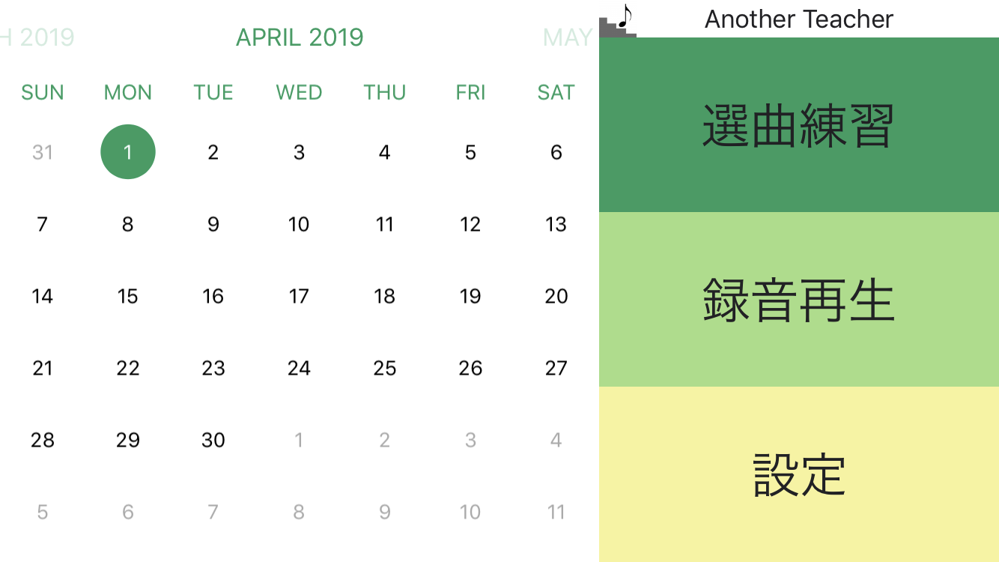

Portfolio
no image
CTlove
某社の３日間インターンにおいて製作。検索した映画やアニメのロケ地をGoogleMap上に表示し、選択した場所を繋いでコンテンツツーリング計画を立てることができるWebアプリ。３人チームで製作。
使用技術：scala, playframeworks

心窓風景
東京大学制作展2019にて展示。手で窓を作った部分に映像が表示される作品。赤外線カメラで手の影を撮影し、opencvで囲まれた形状を検出して表示領域を決定している。
使用技術：c++, opencv, openframeworks

Another Teacher
管楽器初心者のための練習補助iOSアプリ。音程や音量を認識して演奏を評価する。東京大学産学協創プロジェクトの一環で製作。クローズドベータテストを実施した後、AppStoreに審査請求を行った（未公開）。
使用技術：swift
Smile Jumper
表情で操作するゲーム。プレイヤーの笑顔を検知してキャラクターがジャンプする。授業の一環で製作。後にiOS版も試作した。
使用技術：python, opencv, swift
no image
腕立て伏せの回数を計測するアプリ
ユーザーの腕に装着したGenuino101（マイコンの一種）のIMUセンサのデータをiPhoneにBluetoothで送り、腕立て伏せの回数をiPhone画面に表示する。
使用技術：swift, arduino, bluetooth